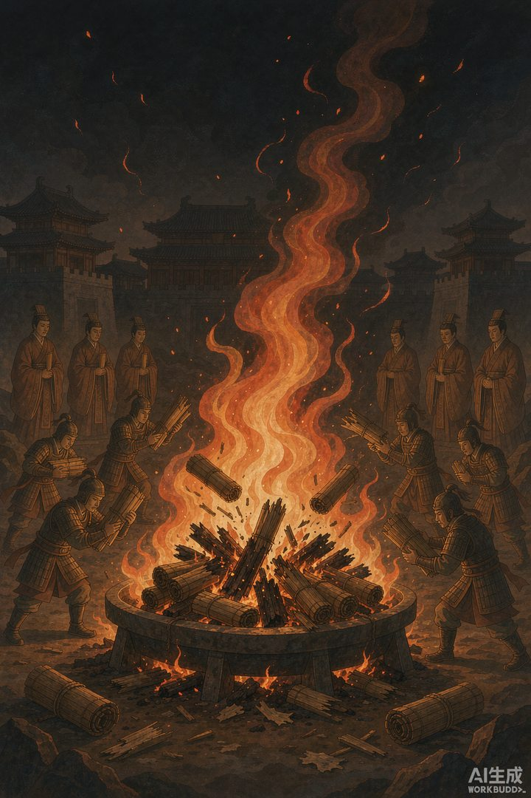
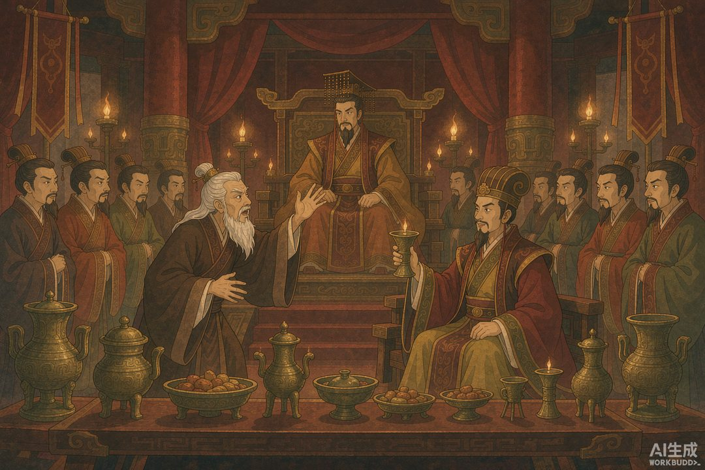
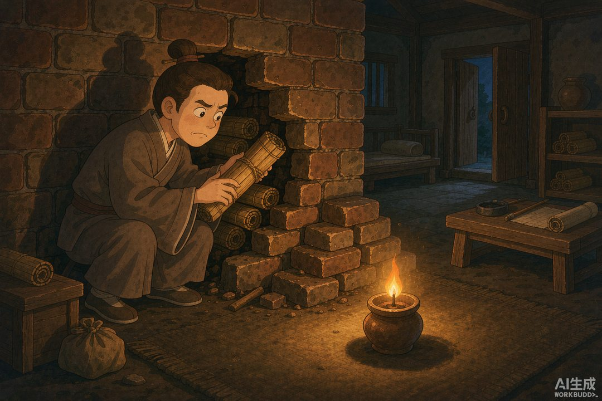

|
《信息传播那些事儿》卷二 · 竹简与封泥 · 第 20 篇 |
|
焚书坑儒：第一次大规模“内容删除” —— 权力面对信息的第一反应，是让它消失 |
|
 |
|
公元前 213 年的那场大火：烧掉的不是竹子，是记忆（AI 生成示意图） |
|
上一篇我们算过账：竹简时代写书搬书都是体力活，能落在简上的每个字都来之不易。可正因为文字有了复制和留存的能力，它也第一次成了权力的眼中钉。公元前 213 年，帝国对这些沉重的竹简，做出了人类历史上第一次大规模的"全量删除"。 |
一 | 一场宴会引发的血案 |
事情的起点，说出来你可能会笑：是一场庆功宴上的抬杠。
公元前 213 年，秦始皇在咸阳宫设酒宴。仆射周青臣起身敬酒，一番话说得漂亮至极：陛下神武，废除分封、推行郡县，天下太平，自古没有哪个君王比得上。秦始皇听了很受用。
可宴会里坐着个较真的老博士，齐人淳于越。他当场反驳：殷周两代能传一千多年，靠的是分封子弟功臣做枝叶辅翼。如今陛下有天下，子弟却成了普通人，万一朝中出事，谁来相救？最后甩下一句狠话："事不师古而能长久者，非所闻也。"不照老规矩办还能长治久安的，我没听说过。
一场"复古还是革新"的制度辩论，就这么在酒桌上开锣。秦始皇没有当场拍板，把议题发给群臣讨论。接下来接话的，是丞相李斯——他反手就是一个大招：与其跟读书人辩论，不如让他们闭嘴。
|
 |
|
咸阳宫宴会：淳于越一句"事不师古而能长久者，非所闻也"，点燃了焚书的引线（AI 生成示意图） |
二 | 焚书令：一份两千年前的"内容黑名单" |
李斯的奏请，值得逐条看看——因为它几乎是一份完整的"内容管制方案"，条款之细，放到今天都毫不违和：
其一，史书区："史官非秦记皆烧之"——六国史书全部烧掉，历史叙事只保留秦国的版本。历史书写权，收归一家。
其二，经书区："非博士官所职，天下敢有藏《诗》《书》、百家语者，悉诣守、尉杂烧之"——民间私藏的儒家经典和诸子百家著作，限期上缴，由郡守郡尉监督烧毁。注意"非博士官所职"这个前缀：官府图书馆里留着一套，民间的不许有。知识由官方垄断，民间只准当读者，不准当持有者。
其三，言论区："有敢偶语《诗》《书》者，弃市"——两个人凑一起聊《诗》《书》，死刑，暴尸街头；"以古非今者，族"——拿古代的事议论今天的政策，灭族。
其四，大限期："令下三十日不烧，黥为城旦"——三十天烧不完？脸上刺字，罚去修城墙。
其五，白名单："所不去者，医药卜筮种树之书"——医书、算卦书、种树手册，不烧。帝国不反对你懂技术，只反对你有想法。
顺手一提，《周易》因为被归为"卜筮之书"，堂而皇之地躲过了这场大火——这部今天被尊为群经之首的书，当年是靠"算命用书"的身份报的备。真实历史，常常比段子更像段子。
三 | 四百六十人：说话的代价 |
书烧完了，还有第二波。
第二年（前 212 年），给秦始皇找长生药的方士侯生、卢生私下发牢骚：这位皇帝"天性刚戾自用"，专任狱吏，贪于权势——仙药我们找不到了，跑吧。俩人卷起铺盖就跑路了。
秦始皇大怒：我养着你们，你们背后骂我？下令御史严查诸生，揪出"犯禁者"四百六十余人，全部坑杀于咸阳，"使天下知之，以惩后"——杀一儆百。
长子扶苏看不下去，劝谏说：诸生都读孔子的书，父皇用重法处置，恐怕天下不安。结果换来的是自己被发配上郡，去给蒙恬当监军。这位后来被指定的继承人离了权力中枢，为秦帝国的迅速崩塌埋下了伏笔。
烧书，是删内容；坑人，是删生产内容的人。两件事合在一起，就是历史上赫赫有名的"焚书坑儒"——权力面对信息的第一个完整反应链条：控制源头，消灭载体，震慑生产者。
四 | 墙里的书：删除的失败 |
那么，这场史上第一次"全量删除"，成功了吗？
孔子九世孙孔鲋给出了另一种答案。焚书令下，这位读书人不肯烧祖传的经书，说了一句："吾将藏之，以待其求。"他把《尚书》《论语》《孝经》等经典偷偷砌进孔子故宅的墙壁夹层，然后隐居嵩山，到死没有取出。
这一藏，就是近六十年。西汉景帝年间（前 154 年前后），鲁恭王刘馀扩建王宫，拆到孔子故宅，忽然听到墙里传出金石丝竹之声——吓得不轻，停止拆毁。人们在墙壁里发现了数十篇用先秦"蝌蚪文"写就的竹简，史称"孔壁古文"。这些书和汉代流传的版本文字内容都有出入，直接引发了此后延续两千年的"今古文经学之争"——一场大删除，烧出了中国学术史上最大的悬案。
还有另一种更传奇的保存方式：用脑子。九十多岁的老儒生伏生凭记忆口授《尚书》，靠人脑硬盘扛过了物理删除。纸会烧，墙会塌，但删不掉一整个文明的记忆——因为信息这东西，载体可以被消灭，记忆和 copying 的冲动消灭不掉。
所以焚书坑儒的历史结论很讽刺：这是史上第一次大规模"内容删除"，也是第一次证明了删除注定失败。权力从此学到了一件事：与其烧书，不如垄断书。而"垄断"这套玩法怎么运转，下篇接着讲。
|
 |
|
孔鲋深夜砌墙藏书："吾将藏之，以待其求"——这一藏就是近六十年（AI 生成示意图） |
本篇数字锚点 |
|
前 213 年 焚书令颁布 |
30 天 烧书大限 |
|
|
460 余人 坑杀于咸阳 |
近 60 年 孔壁藏书的沉睡时长 |
|
下篇预告 · 第 21 篇 《汉代驿置：公文为什么比私信快》——秦二世而亡，汉家接管天下，也接管了秦的信息系统，还把它修得更密、更快。官家信息网为何永远优先服务统治？答案藏在每三十里一座的驿站里。 |
史料参考：《史记·秦始皇本纪》《史记·儒林列传》《汉书·艺文志》《汉书·景十三王传》；本文配图为 AI 生成示意图。